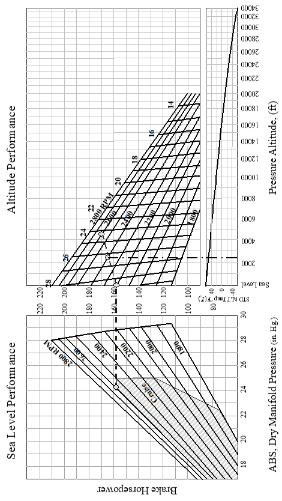
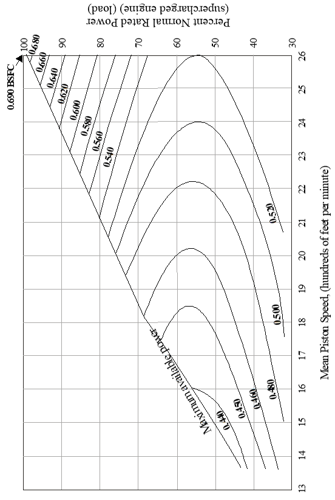
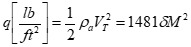

10 Reciprocating Engines
10.1 Recurring Abbreviations and Terminology
Abbreviations
| \(\mathrm{BHP}_{\text{alt}}\) | brake horsepower at maximum altitude where test RPM and MP can be maintained. |
| \(\mathrm{BHP}\) | brake horsepower (measured at engine crankshaft) |
| \(\mathrm{BHP}_{c}\) | chart brake horsepower |
| \(\mathrm{BHP}_{s}\) | brake horsepower at standard conditions |
| \(\mathrm{BHP}_{\text{sl max}}\) | maximum brake horsepower at standard sea level conditions (for any given RPM) |
| \(\mathrm{BHP}_{t}\) | brake horsepower at test conditions |
| \(\mathrm{BSFC}\) | brake specific fuel consumption (fuel flow/horsepower/ hour) |
| \(\mathrm{HP}\) | horsepower \(\left( = 550 \frac{\text{ft-lb}}{\text{sec}} \right )\) |
| \(M\) | freestream Mach number |
| \(\mathrm{MP}\) | manifold pressure, also \(\mathrm{MAP}\) |
| \(P\) | power output \(\left[ \frac{\text{ft-lb}}{\text{sec}} \text{ or HP} \right ]\) |
| \(P_a\) | ambient pressure |
| \(P_{ts}\) | standard day total (ram) pressure |
| \(P_{tt}\) | test day total (ram) pressure |
| \(q\) | dynamic pressure |
| \(Q\) | torque \(\left[ \frac{\text{ft-lb}}{\text{sec}} \right ]\) |
| \(\mathrm{SHP}\) | shaft horsepower (measured at propeller shaft) |
| \(T_{as}\) | standard day ambient temperature (absolute) |
| \(T_{at}\) | test day ambient temperature (absolute) |
| \(T_{cs}\) | standard day carburetor temperature (absolute) |
| \(T_{ct}\) | test day carburetor temperature (absolute) |
| \(V_T\) | freestream true velocity |
| \(\eta_r\) | carburetor ram inlet efficiency |
| \(\rho_a\) | ambient density |
| \(\Delta \mathrm{BHP}_{\text{cat}}\) | change in brake horsepower due to carb. temp. change |
| \(\Delta \mathrm{BHP}_{\text{mp}}\) | change in brake horsepower due to manifold pressure change |
| \(\Delta \mathrm{MP}_{\Delta t}\) | change in manifold pressure due to temperature change |
| \(\Delta t\) | change between test and standard temperature \(\left( T_{at} - T_{as} \right)\) |
| \(C\) | manifold pressure correction factor |
| \(\text{In Hg}\) | inches of mercury (manifold pressure) |
| \(\mathrm{RPM}\) | revolutions per minute |
Terminology
| Bore | Piston diameter |
| Critical Altitude | The altitude at which a supercharged (or turbocharged) engine can no longer: a) maintain sea level manifold pressure, or b) maximum allowable horsepower. |
| Detonation | An operating condition where combinations of excessive temperature, high manifold pressure, and low RPM cause explosive fuel burn, large internal pressure pulses, and subsequent engine damage. |
| Displacement | Total volume swept by all cylinders, measured in either cubic inches or liters. |
| Manifold Pressure | Pressure of fuel-air mixture passing through intake manifold, typically measured in absolute gauge pressure \(\left( \text{In Hg or } \frac{\text{lb}}{\text{in}^2} \right )\) . |
| Mixture Ratio | Ratio of \(\left[ \frac{\text{fuel weight}}{\text{air weight}} \right ]\) passing through the intake manifold. This ratio must be between \(0.05\) and \(0.125\) to burn. Best power typically occurs at mixture ratio of \(0.075\) to \(0.08\) . Best economy typically occurs at a ratio of \(0.0625\) . To provide sufficient cooling, the mixture ratio is usually greatly increased from best economy when operating at very high or very low power settings (a.k.a. auto rich). |
| Reduction Gear | Gearing between the engine crankshaft and propeller shaft that reduces the rotation speed going to the propeller. |
| Stroke | Linear distance traveled by piston. |
| Supercharger | A mechanically driven compressor that boosts the ambient air pressure to provide the engine with higher power output. |
| Turbocharger | Also known as a turbo supercharger, it is similar to a super charger except that the compressor is driven by engine exhaust pressure. |
10.2 Reciprocating Engine Modeling
For any given engine design, power output is primarily a function of the product of engine speed \(\left( \mathrm{RPM} \right)\) and intake manifold pressure \(\left( \mathrm{MP} \right)\) . Smaller but significant effects are due to the fuel/air density \(\left( \rho_{f/a} \right)\) and exhaust back pressure (which is essentially ambient pressure, \(P_a\) ). Less significant effects are due to the condition of the engine itself and include such factors as ignition quality & timing, piston ring leakage, fuel grade, and oil viscosity. Engine models have various levels of sophistication which can account for the four most significant factors listed above. These models can be presented graphically or analytically. Figure 10.2a shows a typical graphic power model for determining reciprocating engine \(\mathrm{BHP}\) .
- The left-hand chart shows the fundamental relation between \(\mathrm{BHP}\) and the product of \(\mathrm{RPM}\) and \(\mathrm{MP}.\) Enter with \(\mathrm{MP}\) and \(\mathrm{RPM}\) to obtain point \(B\) and the associated “base brake horse power” \(\left( \mathrm{BHP}_B \right)\) at sea level standard day pressure and temperature.
- Transfer this \(\left( \mathrm{BHP}_B \right)\) value to point \(B^1\) on the ordinate of the right hand chart.
- Enter the right hand chart with the same \(\mathrm{MP}\) & \(\mathrm{RPM}\) to obtain point \(A\) and the associated brake horsepower at altitude \(\left( \mathrm{BHP}_A \right)\) .
- Connect points \(B^1\) and \(A\) with a straight line.
- Enter the abscissa at the test pressure altitude, locate point \(C\) , and read the corresponding “chart horsepower” \(\left( \mathrm{BHP}_C \right)\) . \(\mathrm{BHP}_C\) is the sea level power corrected to the reduced back pressure conditions at altitude. It does not account for non-standard temperatures.
- To correct for non-standard air temperature, subtract \(1%\) from \(\mathrm{BHP}_C\) for each \(6°\text{C}\) warmer than test altitude standard temperature. Conversely, add \(1%\) to \(\mathrm{BHP}_\text{C}\) for each \(6°\text{C}\) cooler than standard. For convenience, the lower right hand chart of Figure 10.2a illustrates standard temperature as a function of pressure altitude.

Figure 10.2a Engine Performance Chart for Continental IO360D
An analytic power model of a reciprocating engine should match the graphic model. Its principle application is in automating the power determination process rather than manually performing graphic lookups.
- The left hand chart shows that \(\mathrm{BHP}_B\) is a linear function of \(\mathrm{MP}\) , but it is not necessarily a linear function of \(\mathrm{RPM}\) . Extrapolating the \(\mathrm{RPM}\) curves towards low manifold pressure illustrates their convergence to a common point. This left hand chart can be summarized with the equation.
\[\begin{equation*} \mathrm{BHP}_B = \left[ a \left( \mathrm{RPM} \right)^2 + b \left( \mathrm{RPM} \right) + c \right] \left[ \mathrm{MP} - e \right] + d \end{equation*}\]
\(a\) through \(e\) are determined from the graph or from separate engine tests.
- In a similar fashion, calculate
\[\begin{equation*} \mathrm{BHP}_A = \left[ a \left( \mathrm{RPM} \right)^2 + b \left( \mathrm{RPM} \right) + c \right] \left[ \mathrm{MP} \right] \end{equation*}\]
- Based on the direct relation between available power and density, calculate chart horsepower as
\[\begin{equation*} \mathrm{BHP}_C = \mathrm{BHP}_B \left[\mathrm{BHP}_A + \mathrm{BHP}_B \right] \left[ \frac{1 - \sigma_A}{1 - \sigma_D} \right] \end{equation*}\]
where \(\sigma_D\) is the standard atmosphere density ratio at the operating pressure altitude \(\left(H_c\right)\) . For convenience, this calculation is presented below for flight in the tropopause, with \(H_c\) in feet
\[\begin{equation*} \sigma_D = \left[ 1 - 6.876 \times 10^{-6} H_c \right]^{4.2558} \end{equation*}\]
\(\sigma_A\) is the density ratio corresponding to point \(A\) and is calculated as
\[\begin{equation*} \sigma_A = 0.117 + \frac{\mathrm{BHP}_A}{\mathrm{BHP}_{\text{sl max}}} \end{equation*}\]
where \(\mathrm{BHP}_{\text{sl max}}\) is the full-throttle sea level power at the \(\mathrm{RPM}\) in question. This value is located towards the right side of the \(\mathrm{BHP}_B\) chart.
- The final step in determining test day power \(\left( \mathrm{BHP}_t \right )\) is to correct for non-standard ambient absolute temperature \(\left( T_a \right)\)
\[\begin{equation*} \mathrm{BHP}_t = \mathrm{BHP}_C \sqrt{ \frac{T_{as}}{T_{at}} } \end{equation*}\]
where \(T_{as}\) is the standard absolute ambient temperature at the test altitude, and, below the tropopause, is calculated as \(T_{as} = 288.15 - 0.001\,9812 H_c\) .
The fuel flow model is centered around the brake specific fuel consumption \(\left( \mathrm{BSFC} \right )\) defined as
\[\begin{equation*} \mathrm{BSFC} \equiv \frac{\text{fuel flow}}{\text{power}} \left( \frac{ \frac{\text{lb}}{\text{hr}} }{\mathrm{BHP}} \right) \end{equation*}\]
Figure 10.2b shows the basic effect of \(\mathrm{RPM}\) and \(\mathrm{BHP}\) on \(\mathrm{BSFC}\) (ref 10.5.4).
- At any given \(\mathrm{BHP}\) , operating at lower \(\mathrm{RPM}\) s reduces mechanical friction and therefore \(\mathrm{BSFC}\) .
- At any given \(\mathrm{RPM}\) , operating at very low \(\mathrm{BHP}\) increases the percentage of piston work overcoming friction and therefore increases \(\mathrm{BSFC}\) .
- Operation at high \(\mathrm{BHP}\) also increases \(\mathrm{BSFC}\) , but this is due to the fuel enrichment required to prevent detonation at high loads.

Figure 10.2b Effect of \(\mathrm{RPM}\) and \(\mathrm{BHP}\) on \(\mathrm{BSFC}\)
The same effects can be modeled as shown in Figure 10.2c (ref 10.5.5).
- Not shown on these figures are the possible altitude and temperature effects. Flight testers rarely need to validate these models throughout the engine’s working range. Instead, testers typically evaluate \(\mathrm{BSFC}\) only at the combinations of \(\mathrm{RPM}\) and \(\mathrm{MP}\) recommended by the manufacturer to give the desired power output.

Figure 10.2c \(\mathrm{BSFC}\) Curves for a Typical Supercharged Airplane Engine
10.3 Reciprocating Engine Power Standardization (ref 10.5.4)
Correcting from test day to standard day power available uses one of several methods, depending on the test conditions.
Some useful insights are summarized below.
- In all cases, test day \(\mathrm{RPM}\) must equal standard day \(\mathrm{RPM}\) . There are no corrections if this requirement is violated.
- The effect of density on power output at wide open throttle has been empirically shown to be, (ref. 10.5.6)
\[\begin{equation*} \mathrm{BHP}_{\text{alt}} = \mathrm{BHP}_{\text{sl max}} \left( 1.1324 \sigma - 0.1324 \right) \end{equation*}\]
- The above correction is not typically applied to test data since test and standard day pressure altitudes \(\left( H_c \right )\) are usually the same. Instead, most standardization requirements center around correcting to standard temperature.
- Engine power is actually related to the carburetor air temperature. The difference between test and standard day carburetor temperature equals the difference between test and standard day ambient temperature \(\left( T_{ct} - T_{cs} = T_{at} - T_{as} \right )\) .
- With proper design, most of the freestream dynamic pressure \(\left( q \right )\) is converted into additional pressure at the carburetor and is known as “ram” effect. Above the critical altitude (where full throttle operation does not generate maximum manifold pressure), ram effect can be used to increase manifold pressure and therefore power output.
The different power standardization methods are described below.
Partial Throttle Standardization. If the test engine is set at some partial throttle setting to achieve a specific manifold pressure, then the same \(\mathrm{MP}\) should be achievable on standard day with a slightly different throttle setting. Calculate standard day power \(\left( \mathrm{BHP}_s \right )\) as
\[\begin{equation*} \mathrm{BHP}_s = \mathrm{BHP}_t \left( \frac{T_{ct}}{T_{cs}} \right)^n \end{equation*}\]
- \(T_{cs}\) is the standard day carburetor absolute temperature, \(T_{cs} = T_{as} - T_{at} + T_{ct}\)
- \(n\) is the power exponent, usually \(0.5\)
This correction does not address changes in back pressure, so \(H_{c \text{ test}} = H_{c \text{ std}}\)
Full Throttle Standardization applies only if test and standard pressure altitude are equal. If the engine is operated full throttle on a test day, then the change in ambient temperature would generate a power change due to carburetor air temperature \(\left( \Delta \mathrm{BHP}_{\mathrm{cat}} \right )\) and manifold pressure changes \(\left( \Delta \mathrm{BHP}_{\mathrm{mp}} \right )\) . Calculate standard day power \(\left( \Delta \mathrm{BHP}_s \right )\) as
\[\begin{equation*} \mathrm{BHP}_s = \mathrm{BHP}_t + \mathrm{BHP}_{\mathrm{cat}} + \mathrm{BHP}_{\mathrm{mp}} \end{equation*}\]
The first correction is another form of the previous constant \(\mathrm{MP}\) correction
\[\begin{equation*} \mathrm{BHP}_{\mathrm{cat}} = \mathrm{BHP}_t \left[ \left( \frac{T_{ct}}{T_{cs}} \right)^n - 1 \right] \end{equation*}\]
The second (manifold pressure) correction accounts for two effects:
- For supercharged engines, correct for the change in pressure ratio of the supercharger due to inlet temperature changes.
- For all engines operating below maximum \(\mathrm{MP}\) , correct for the change in air inlet ram pressure ratio due to flight Mach number changes.
\[\begin{equation*} \mathrm{BHP}_{\mathrm{mp}} = \mathrm{BHP}_t \left( \frac{\mathrm{MP}_s}{\mathrm{MP}_t} -1 \right) \end{equation*}\]
\(\mathrm{MP}_t\) is the test manifold pressure.
\(\mathrm{MP}_s\) is the manifold pressure corrected to standard temperature and flight Mach number:
\[\begin{equation*} \mathrm{MP}_s = \mathrm{MP}_{\Delta t} \frac{P_{ts}}{P_{tt}} \end{equation*}\]
\(\mathrm{MP}_{\Delta t}\) is the correction of manifold pressure due to changes in ambient temperature and is approximated as
\[\begin{equation*} \mathrm{MP}_{\Delta t} = \mathrm{MP}_t C \Delta t \end{equation*}\]
\(C\) is a constant depending upon the pressure ratio \(\left( \frac{P_2}{P_1} \right )\) , carburetor air inlet temperature, and whether or not the fuel is vaporized during process.
- If only the air is compressed, or if the inlet temperature is measured after fuel vaporization, then determine \(C\) using Figure 10.3a.
- If the fuel is injected after the temperature is taken but before the charge is compressed, then determine \(C\) using Figure 10.3b.
- By use of Figures 10.3a and 10.3b, any combination of induction processes for air only or for a fuel air mixture may be evaluated.
\(\Delta t\) is the difference between test and standard day carburetor air temperature and was previously described as the change in ambient air temperature
\[\begin{equation*} \Delta t = T_{at} - T_{as} \end{equation*}\]
\(\frac{P_{ts}}{P_{tt}}\) is the ratio between standard and test day total (ram) inlet pressures at the standard and test Mach numbers. The first step in determining this ratio is to recognize
\[\begin{equation*} \frac{P_{ts}}{P_{tt}} = \frac{ \frac{P_{ts}}{P_{a}} }{ \frac{P_{tt}}{P_{a}} } \end{equation*}\]
\(P_a\) is the pressure altitude and must be the same for test and standard days. Calculate \(\frac{P_{tt}}{P_{a}}\) using test Mach number and the equation
\[\begin{equation*} \frac{P_{tt}}{P_{a}} = \eta_r \left[ \left( 1 + 0.2 M^2 \right)^{3.5} -1 \right] +1 \end{equation*}\]
\(\eta_r\) is the carburetor inlet ram efficiency and is usually between \(0.7\) and \(0.75\) . A more exact value may be calculated as
\[\begin{equation*} \eta_r = \frac{ P_{t \left( \text{actual} \right)} - P_a }{ P_{t \left( \text{theoretical} \right)} - P_a } \end{equation*}\]
Calculate \(\frac{P_{ts}}{P_{a}}\) using the same equations and standard Mach number.
- This last calculation may be iterative because standard Mach number cannot be exactly determined from the drag polar until power output is known.
- This correction is not normally made unless the flight Mach number is above \(0.6\) and the power change causes a speed change of more than \(3\) knots.
- To get a feel for the dynamic pressure change (and therefore ram effect change) due to Mach number change, recall
\[\begin{equation*} q \left[ \frac{\text{lb}}{\text{ft}^2} \right] = \frac{1}{2} \rho_a V_T^2 = 1481 \delta M^2 \end{equation*}\]

The final standard day power curves are presented in a form similar to that shown in Figure 10.3c

Figure 10.3a Manifold Pressure Correction When Temperature is Measured After Fuel Vaporization

Figure 10.3b Manifold Pressure Correction When Temperature is Measured Before Fuel Injection

Figure 10.3c Example Standard Day Supercharged Engine Performance Data
10.4 FAA Approved Engine Temperature Corrections
The intent is to ensure that the critical engine parts, (i.e., cylinder head and cylinder barrel) do not exceed the engine manufacturer’s specified limits during worst-case climb operating conditions on a \(100° \text{F}\) hot day.
Test procedures are detailed in AC 23-A. The basic idea is best illustrated with the single-engine airplane procedure:
- Trim in level flight at the lowest practical altitude with at least \(75%\) maximum continuous power. Allow temperatures to stabilize.
- Increase engine power to takeoff rating and climb at a speed not greater than \(V_y\) (best climb speed). Maintain takeoff power for one minute.
- At the end of one minute, reduce engine power to maximum continuous and continue climb for at least five minutes after temperatures peak or the maximum operating altitude is reached. Flight manual lean ing procedures should be used.
Correct the peak test day cylinder barrel temperature \(\left( T_{bt} \right )\) to hot day conditions \(\left( T_{bh} \right )\) as follows
\[\begin{equation*} T_{bh} = T_{bt} +0.7 \left[ 100 - 0.0036 H_c - T_{at} \right] \end{equation*}\]
Correct the peak test day cylinder head or other temperature \(\left( T_{ht} \right )\) to hot day conditions \(\left( T_{hh} \right )\) as follows
\[\begin{equation*} T_{hh} = T_{ht} + 100 - 0.0036 H_c - T_{at} \end{equation*}\]
\(H_c\) is the pressure altitude in feet \(T_{at}\) is the outside air temperature in degrees \(\text{F}\)
This method is known to be quite conservative. More satisfactory temperatures may be achieved by actually testing during hot weather.
10.5 References
| 10.5.1 | Roberts, Sean C. “Light Aircraft Performance,” Flight Research Inc. Mojave, CA, 1982. |
| 10.5.2 | Lawless, Alan R, “Fixed Wing Aircraft Performance Testing” Chapters 3 and 4, National Test Pilot School, Mojave CA, 1996. |
| 10.5.3 | Baughn, J. W., “A Method for computing Brake Horsepower from the Performance Charts of Reciprocating Aircraft Engines,” AIAA- 94-2148-CP, from 7th Biennial AIAA Flight Test Conf., 1994. |
| 10.5.4 | Herrington, R. M. Major, USAF, et al, “Flight Test Engineering Handbook,” USAF Technical report No. 6273, AFFTC, Edwards AFB, CA, May 1951. |
| 10.5.5 | Chatfield, C. H., et al, “The Airplane and its Engine,” McGraw Hill, 1949. |
| 10.5.6 | Gagg, R.F., and Farrar, E.V., “Altitude Performance of Aircraft Engines Equipped with Gear-Driven Superchargers,” SAE Transcripts, Vol 29, pg 217-223, 1934. |
| 10.5.7 | anon., “Flight Test Guide for Certification of Part 23 Air planes,” U.S. Department of Transportation Advisory Circular 23-8A, 1989. |
Additional Reading and Second Generation References
| 10.5.8 | Smith, H. C., and Dreier M. E., “A computer Technique for the Determination of Brake Horsepower Output of Normally Aspirated Reciprocating Aircraft Engines,” SAE paper No. 770465, March 1977. |
| 10.5.9 | Hamlin, B., “Flight Testing Conventional and Jet-Propelled Airplanes,” The Macmillan Co., New York, NY, 1946. |
| 10.5.10 | Operators Manual for Series IO-360 Aircraft Engines, form No. X-30032, FAA Approved March 1979. |